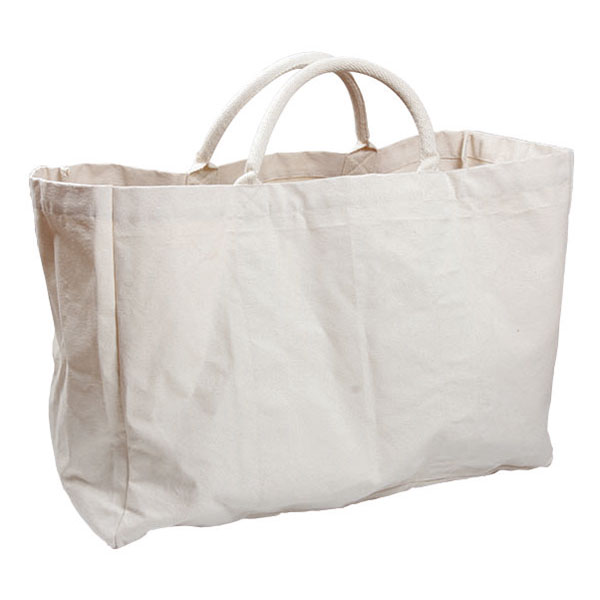
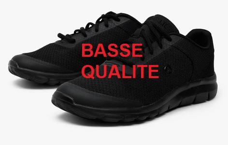

L’éco-conception est un concept qui fait entrer l’environnement dans les critères de conception ou d’amélioration d’un produit. Une nouvelle dimension apparaît donc dans la phase de conception d’un produit :
L’objectif de l’éco-conception est qu’à performances égales, les impacts environnementaux soient réduits le plus possible. Cette démarche consiste donc à rechercher les meilleures solutions de conception d’un produit pour l’environnement sans en altérer sa qualité.
La présence de l’environnement dans la conception d’un produit amène des modifications de son élaboration. Il faut avoir une démarche plus globale en considérant cette production sur l’ensemble des étapes de son cycle de vie; c’est à dire penser le produit pour une optimisation de chaque étape (coût de fabrication plus faible, durée de vie plus longue, valorisation maximum).
Cette démarche globale associe également l’ensemble des données environnementales à la conception (approche multi-critères). C’est à dire que pour chaque étape du cycle de vie, il faut analyser la consommation de matière première, d’énergie, les pollutions émises (eau, air et sol), la quantité de déchets,…
Une dernière vision du produit est à prendre en compte lors de sa conception, c’est d’envisager le produit avec l’ensemble des éléments qui l’entoure (approche multi-composants). Ces composants sont l’emballage, l’activité de commercialisation (publicité, démarchage,…), les accessoires nécessaires au produit (piles par exemple),…
Le regroupement de ces différentes approches permet de dégager un certain nombre de voies d’améliorations telles que l’utilisation de matériaux ayant moins d’impacts sur l’environnement, la diminution du nombre de matériaux différents, l’optimisation de la fabrication, la réduction des emballages, l’augmentation de la durée de vie du produit, la réduction des impacts lors de l’utilisation et une valorisation maximum. Mais toute intervention sur la conception d’un produit entraîne des modifications de son impact sur l’environnement à différents niveaux de son cycle de vie. Il faut donc faire attention à réduire les impacts sur l’environnement sans faire de « transfert de pollution ». C’est à dire que l’amélioration d’une étape ne doit pas se faire au détriment d’une autre.
L'ACV est un outil d'évaluation environnemental multicritère prenant en compte l'ensemble des étapes du cycle de vie d'un produit et permettant de quantifier ses impacts sur l'environnement.
Avant de faire une étude, il faut d'abord commencer par identifier la ou les fonctions étudiées, et ensuite relier les impacts à la ou les fonctions principales.
L'unité fonctionnelle permet d'établir une base de comparaison parmi des produits qui peuvent, sous de formes très différentes (biens, services..), remplir la même fonction pour l'utilisateur. Elle doit être une unité d'usage et non pas seulement une unité de fabrication.
On peut parfois compléter l'UF par les questions "quelle est la durée du service offert ?" et "quelle est la performance du service offert ?".
| Produit | Service offert | Durée du service offert | Unité fonctionnelle |
| Sèche-mains | 1 paire de main séchée | - | 1 paire de main séchée |
| Basket course à pied | Courir 15 km 3 fois par semaine | 2 ans | Courir 15 km 3 fois par semaine pendant 2 ans |
| Peinture | Couvrir 50 m2 de mur | 10 ans | Couvrir 50 m2 de mur pendant 10 ans |
Pour une unité fonctionnelle, les flux de référence correspondent à la quantité de produit nécessaire pour remplir cette fonction. Ces flux serviront pour effectuer l'inventaire des émissions et extractions de matières.
| Produit | Unité fonctionnelle | Flux de référence |
| Cabas 20L, durée de vie 6mois. 
| Transporter 20l de marchandises 2 fois par semaine pendant 1 an | 2 cabas de 20L |
| Sac PE 10L, usage unique. | 208 sac PE 10L |
| Produit | Unité fonctionnelle | Flux de référence |
| Durée de vie 1 an | Courir 15km 3 fois par semaine pendant 2 ans | 2 paires de baskets 6 paires de lacets |
| Durée de vie 6 mois 
| 4 paires de baskets 6 paires de lacets |
Cet indicateur exprime la quantité totale d’énergie fossile consommée sur tout le cycle de vie du produit.
En mégajoules (MJ).
Cet indicateur exprime la quantité de matières « rares » consommée sur tout le cycle de vie du produit.
En kilogrammes d’équivalent Antimoine (kg de Sb éq).
Les impacts environnementaux se définissent en trois groupes: épuisement des ressources, pollutions et nuisances. Ces impacts peuvent être évalués grâce à des progiciels d'ACV; et leur interprétation permet de prévoir les dommages possibles sur l'environnement.
Le GWP (Global Warming Potential ou potentiel de réchauffement climatique ou PRG) est utilisé pour calculer le facteur de caractérisation de l'effet de serre. Cet indicateur exprime le potentiel d'effet de serre additionnel qu'engendre le produit considéré sur l'ensemble de son cycle de vie.
En kilogrammes d’équivalent dioxyde de carbone (kg de CO2 éq).
L’acidification recouvre le problème des pluies acides qui modifie la productivité des écosystèmes. L'acidification des sols entraîne leur appauvrissement en minéraux (calcium, potassium, magnésium) nécessaires à la nutrition des végétaux. L'acidification des pluies entraine l'acidification de certaines eaux de surfaces (lacs par ex) et des océans.
En kilogramme d’équivalent dioxyde de soufre (kg de SO2 éq).
L’eutrophisation est un enrichissement excessif des milieux aquatiques en sels nutritifs, surtout le phosphore et l’azote qui provoque une diminution de la diversité biologique, une baisse de la qualité de l’eau et une augmentation de la production d'algues et de plantes aquatiques.
En kilogramme d’équivalent phosphate (kg de
PO43- éq).Cet indicateur exprime le potentiel de formation d’ozone troposphérique qu’engendre le produit considéré sur l’ensemble de son cycle de vie. La production d’ozone troposphérique (= au niveau du sol) engendre des problèmes sur la santé humaine notamment des difficultés respiratoires.
En kilogrammes d’équivalent étylène (kg de
C2H4 éq).On entend par écotoxicité aquatique, l’évaluation de la toxicité d’un produit ou d’une substance dans l'eau douce.
En kilogrammes d’équivalent 1,4 dichlorobenzène (kg de 1,4 DCB éq).
On entend par toxicité humaine ou impacts toxicologiques, l’évaluation de la toxicité d’un produit ou d’une substance sur l’être humain.
En kilogrammes d’équivalent 1,4 dichlorobenzène (kg de 1,4 DCB éq).
Il existe trois catégories de produits:
Lorsqu’un produit est consommateur d’énergie, il faut absolument travailler sur l’efficacité énergétique de celui-ci. On peut prendre comme exemple le sèche mains "d'une marque très connue" qui en utilisant la technologie de l’air froid pulsé à grande vitesse permet d’économiser 24 W par paire de mains séchée et de ce fait évite 6 fois moins d’émission de CO2 dans l’atmosphère. Dans ce cas l’innovation technologique a permis d’éliminer la résistance chauffante, donc de diminuer la consommation d’énergie.
A l’origine la phase de transport était prédominante, l’effort de la société s’est porté sur l’encombrement du fauteuil lors de la distribution, ils ont diminué le volume par 2 et fait un gain de 300 camions. Ensuite leurs efforts se sont tournés vers la durée de vie du produit en proposant des échanges standard des différents composants. Ils ont dû reconcevoir leur produit pour éliminer tout assemblage non démontable, ceci induit des changements de processus de fabrication.
Pour un produit passif, les démarches d’éco-conception sont multiples, pour réduire l’impact de manière significative, il faut tenir compte du contexte dans lequel il évolue et de manière générale augmenter sa durée de vie afin de limiter les transports, les fabrications,…
Pour un produit jetable, la problématique est plus simple, on s’aperçoit que quelque soit le produit les phases de fabrication et de matières premières ont un impact prédominant sur l’environnement ceci est dû au processus de fabrication utilisé et à la matière consommée, il faut donc agir principalement sur la masse de l’emballage et les procédés de fabrication.
La roue de LiDS (Lifecycle Design Strategies) est un outil visant à favoriser l’accessibilité de l’éco-conception aux PME. Cet outil a été introduit par Van Hemel en 1998 dans sa thèse EcoDesign empirically explored – Design for Environment in Dutch small and medium sized enterprises (Delft University of Technology).
L’utilité de cet outil est double puisqu’il peut permettre à la fois un diagnostic produit simplifié et l’établissement de stratégies d’éco-conception.
Les 7 axes de l’outil permettent de définir les orientations à prendre pour réduire les impacts environnementaux d’un produit :